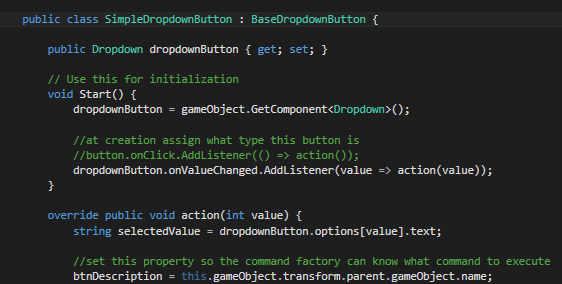

Our new 3d engine that drives our future upcoming apps.
Unity is built around components, so it is best to also build your scripts like components. Think modules. One script specifically does one task. Say you have a hero game object with hp, weapon, and inputs. You'd create 3 classes total to handle each of these components, and you put it on the gameobject
Also think, interface. Build your classes around interfaces. For example, HP class should implement a Interface IDamagable if HP class is going to handle damaging system. HP class should also implement a 2nd, 3rd interface or more, if it is handling other functionalities that can be grouped as a category. Class A shouldn't have to access directly methods in Class B, but rather access an interface that class B has implemented.
From best to least recommended. Json.net in terms of performance is the fastest 3rd party plugin.
Quaternion is a complex set of rotation that allows objects to rotate around in xyz axis. It defines an angle and a direction kinda. Example1 of how to use Quternion to look at something
You have two options, get using WWW alone or post using WWWForm combined with WWW. To use the class, the instantiating class can't be static due to monobehaviour. So create a class that can last throughout the app if you are doing scene loading. If you do not make a singleton class of this web call, when you load a scene, it will stop/interrupt the current communication during a load scene.
Webplayer and webGL builds using server calls must have a crossdomainpolicy.xml set at the root level of their domain within the server. Helpful links Web comm1. If you do this however, be extra careful that only the correct game calls can talk to the server as doing this opens the portal for outside attacks.
However, if the game is loaded from the same web server the data is in, this cross domain issue will not occur and will load data fine.
This build usually creates 30MB+ package folder due to all the c# conversion to javascript.
Linking dynamic dropdown btns. to map the button to a method and carry over the selection, we use lambda expression, which allows us to create an annonymous expression and pass in arguments
To trigger events while the button is pressed, add the event trigger to your button and choose onPointUp and onPointDown.
Then attach a gameobject with the methods
To be able to switch player and use different actions for the same controller, use the design pattern related to the adaptor pattern. Don't directly hook up the buttons to a player game object.
If you are targeting IOS and Andriod. here's a basic run through to get started. link
You are responsible for placing the ad and for when it should appear
The benefit of this is code reuse. If you update the library, the downside is that you will have to rebuild and deploy your dll. Also, code debug may or may not work as you won't be able to click on a code in the unity console to jump to the code. There seems like, there is a way around this though.
Use the IDE to do it, and include the UnityEngine.dll and UnityEditor.dll
There is talk that you have to build two DLL, one to put into any urnity project folder except the Editor folder and another to put into the Unity Editor folder. This is when you are using scripts that will use the Unity Editor